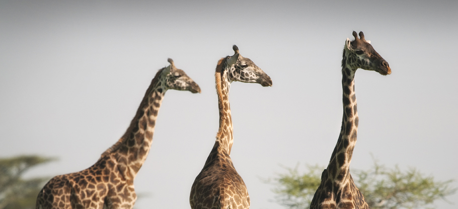

Although organizations like the WWF and AWF are great, they don't focus on a certian species of animals.
Making a small group is better than no group at all!
Hunting an animal like a giraffe doesn't make sense considering they are the opposite of overpopulated.
IF THE POACHING DOESN'T STOP, THEY WILL EVENTUALLY BE EXTINCT
Wildlife preservations are a main factor in maintaining any endangered species.
An amazing organization that works with the conservation of giraffes and places them in a safe location is the Giraffe Conservation Foundation.
PLEASE CONSIDER DONATING TO THEM!
No matter how big or small, doing something to prtoect giraffes and avoiding extinction is the main goal.
All help is appreciated!